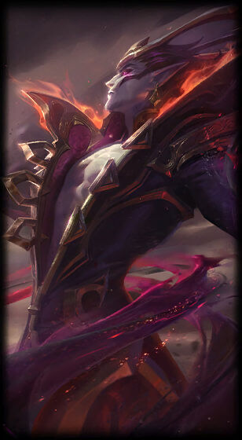

Skins
Vladimir Tradicional
Conde Vladimir
Marquês Vladimir
Vladimir Nosferatu
Vladimir Vândalo
Vladimir Lorde do Sangue
Vladimir Ladrão de Almas
Vladimir Colegial
Vladimir Águas Sombrias
Vladimir Emissário da Escuridão
Vladimir Devorador Cósmico
Caso queria verificar as skils in-game acesse o link clicando aqui.